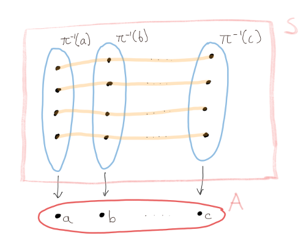
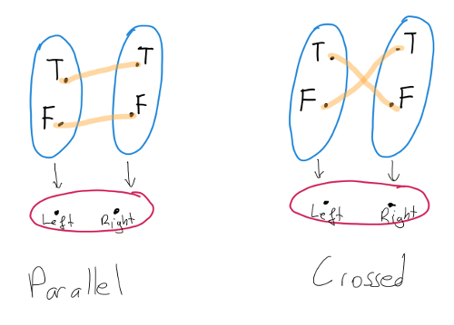
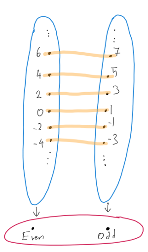

\[ \newcommand{\view}{\textrm{get}} \newcommand{\set}{\textrm{set}} \]
This is a brain-dump of how I think about lenses in isolation. I will be using the lens laws directly in the category of sets with functions. So the arguments are meaningful for all lens implementations. Mathematical parts may seem opaque if you are not used this kind of technical writing but this should not deceive you. The content is not deep and I am sure all of these are known to experts. However I haven’t seen these arguments written down like this anywhere else.
Update: Found it! Unifying Set-Based, Delta-Based and Edit-Based Lenses by Michael Johnson and Robert Rosebrugh has essentialy the ame content. Also, found a paper by the same authors treating lenses as Grothendieck opfibrations Lenses, fibrations and universal translations. So why read this post instead of these papers? Well, probably for the fibration formulation inspired lens constructions implemented in Haskell.
Let us recall the definition of a lens expressed in terms of its usual api, namely the functions \({\rm view}\) and \({\rm set}\).
Definition: Let \(S\) and \(A\) be sets. A lens from \(S\) to \(A\) is a tuple \[ \langle \view\colon S\to A,\, \set\colon S\to A\to S \rangle \] satisfying the following identities:
In this post I will derive a different and a little bit more geometric characterization of lenses. But before that we need two preliminary notions.
The first is the notion of a fiber of a function. Given a function \(\pi\colon S\to A\) and an element \(a\in A\), we define the fiber of \(\pi\) above \(a\) to be \[ \pi^{-1}(a) = \{s\in S | \pi(s) = a\}. \] Note that \(S\) is a disjoint union of fibers of \(\pi\). We denote the set of fibers of \(\pi\) by \(S/\pi\). So \(S/\pi\) is the set of equivalence classes of the relation defined by \(a_1\equiv a_2\) if and only if \(\pi(a_1)=\pi(a_2)\). We will also view \(S/\pi\) as a category whose objects are the equivalence classes and whose morphisms are the functions.
The second one is the notion of a codiscrete groupoid. Let \(A\) be any set. Define \(\mathcal{E}(A)\), the codiscrete groupoid on \(A\), to be the category whose objects are the elements of \(A\) and for any two elements \(a,b\in A\) the set \({\rm Hom}(a,b)\) has precisely one element. We will denote this element by \(\epsilon_{a,b}\). Note that \(\mathcal{E}(A)\) is a groupoid, that is, all morphisms are isomorphisms. Indeed \(\epsilon_{a,a} = {\rm Id}_a\) and \(\epsilon_{a,b}^{-1}\) is given by \(\epsilon_{b,a}\).
Now we can give our definition.
Definition: Let \(S\) and \(A\) be sets. A lens fibration from \(S\) to \(A\) is a tuple \[ \langle \pi\colon S\to A,\, F\colon\mathcal{E}(A)\to S/\pi \rangle \] where
Here is our claim: Let \(S\) and \(A\) be sets with \(S\neq\emptyset\). Then for a lens from \(S\) to \(A\) we can construct a lens fibration from \(S\) to \(A\). Similary, for a lens fibration from \(S\) to \(A\) we can construct a lens from \(S\) to \(A\). Moreover these constructions are inverse to each other.
Let’s begin. Fix \(S\) and \(A\) as in the claim.
Lens to fibration: Given a lens \(\langle \view,\, \set \rangle\) from \(S\) to \(A\) let us define \(\pi = \view\). First we need to show that \(\pi\) is surjective. Pick an \(s\in S\). For any \(a\in A\) we have \[ a = \view\,(\set\,s\,a) = \pi(\set\,s\,a). \] by the second lens rule. Thus \(a\) is in the image of \(\pi\). Now let us define the functor \(F\). We do not have a choice on the action of \(F\) on the objects of \(\mathcal{E}(A)\): we must have \(F(a)=\pi^{-1}(a)\). For morphisms, we define \(F(\epsilon_{a,b})\colon\pi^{-1}(a)\to\pi^{-1}(b)\) by the rule \[ F(\epsilon_{a,b})(s) = \set\,s\,b. \] Let us first check that \(F(\epsilon_{a,b})\) does send the fiber above \(a\) to the fiber above \(b\). Let \(s\in\pi^{-1}(a)\). Then \[ \pi(F(\epsilon_{a,b})(s))=\pi(\set\,s\,b)= \view\,(\set\,s\,b) = b \] by the second lens rule. So \(F(\epsilon_{a,b})\) sends \(s\) to \(\pi^{-1}(b)\).
Now let us check the functor laws.
Fibration to lens: We will go in the opposite direction. Let \(\langle \pi,\, F \rangle\) be a lens fibration. Let \(\view = \pi\) and let \[ \set\,s\,a = F(\epsilon_{\pi(s),a})(s) \] for \(s\in S\) and \(a\in A\). Note that this makes sense since \(s\) is in the domain of \(F(\epsilon_{\pi(s),a})\), namely \(\pi^{-1}(\pi(s))\). Now let us prove the lens laws.
I will not prove that these constructions are inverse to each other –LaTeX is time consuming– but at this point it should not be too difficult to produce a proof.
A few observations are in order. Let \(\langle \pi,\, F \rangle\) be a lens fibration. Then all fibers of \(\pi\) are isomorphic because \(\mathcal{E}(A)\) is a connected groupoid and functors preserve isomorphisms. This also means that for any \(a\in A\), \(S\) is isomorphic to \(A\times\pi^{-1}(a)\).
One can also view the notion of a lens fibration as a special case of a groupoid action defined, say, in section 10.4 of Topology and Groups by Ronald Brown. The orbits of this action are the equivalence classes of the equivalence relation on \(S\) defined by \[ s \equiv t \;\;\;\text{ if and only if }\;\;\; F(\epsilon_{\pi(s),\pi(t)})(s)=t. \] Each orbit intersects with all fibers exactly once thus restricting \(\pi\) to any one of these orbits gives a bijection onto \(A\). So in addition to the “vertical” decomposition of \(S\) into fibers, we also have a “horizontal” decomposition into orbits.
This is a lot to take in. So let’s draw a picture explaining the situation.

Here the big rectangle is the set \(S\) decomposed into blue fibers. The light orange lines are the orbits.
It is time to see some examples with real code.
I posted the code in this section as a gist if you want to play with it.
Example 1: Lens on Either
Let us begin with the simplest nontrivial example. Assume that \(A\) has only two elements. Then \(S\) is a disjoint union of two fibers so we can model \(S\) by Either. Let us also model \(A\) by a custom data type called Position.
data Position = OnTheLeft | OnTheRight
deriving ShowNow if we have an isomorphism between two types a and b then we can use them as fibers and define a lens from Either a b to Position. The implementation is straightforward.
lensFromIso :: Iso' a b -> Lens' (Either a b) Position
lensFromIso f = lens getter setter
where
getter = \case
Left _ -> OnTheLeft
Right _ -> OnTheRight
setter s a =
case (s, a) of
(Left a, OnTheRight) ->
Right $ a ^. f
(Right b, OnTheLeft) ->
Left $ b ^. re f
_ ->
sTo simplify things further, let us take a and b to be Bool. Then we can describe all lens structures with signature Lens' (Either Bool Bool) Position because we know all automorphisms of Bool:
parallel :: Lens' (Either a a) Position
parallel = lensFromIso simple
crossed :: Lens' (Either Bool Bool) Position
crossed = lensFromIso $ iso not notThese lenses have the same getter but their setters are different. Drawing pictures of these lenses should clarify the choice of names.

Actually parallel is a more traditional lens in disguise. Note that we have the following isomorphism:
data WithPosition a = WithPosition
{ _value :: a,
_position :: Position
} deriving Show
makeLenses ''WithPosition
productToSum :: Iso' (WithPosition a) (Either a a)
productToSum = iso fromProduct fromSum
where
fromSum = \case
Left a -> WithPosition a OnTheLeft
Right a -> WithPosition a OnTheRight
fromProduct (WithPosition a pos) =
case pos of
OnTheLeft -> Left a
OnTheRight -> Right awhich is an instance of the isomorphism \(a\times 2 \cong a + a\). Using this isomorphism we can define
position' :: Lens' (WithPosition a) Position
position' = productToSum . parallelIt is easy to see that position and position' are the same lens.
Example 2: Sum without Either
In the previous example we modeled a disjoint union as a sum type. It may be the case that decomposition into a sum is not explicitly expressed in the type. Now let us see an example of that. This time we will start with the picture:

The fibers are the even and odd numbers. As in the case of Position we will define a custom type to model \(A\).
data Parity = Even | Odd
deriving Show
parity :: Lens' Int Parity
parity = lens getter setter
where
getter n =
if even n then Even else Odd
setter n p =
case (getter n, p) of
(Even, Odd) -> n + 1
(Odd, Even) -> n - 1
_ -> nNote that in this example the fibers are not types in Haskell –maybe in Liquid Haskell, hmm…– but we can still define a lens very much like lensFromIso.
Example 3: Pairs as fibrations
Now let us remove our restriction on the size of \(A\). We can define
lensFromIsoFamily :: (a -> a -> b -> b) -> Lens' (a, b) a
lensFromIsoFamily functor = lens getter setter
where
getter (a, _b) = a
setter (a1, b) a2 = (a2, functor a1 a2 b)Here (a2, functor a1 a2 b) corresponds to \(F(\epsilon_{a_1, a_2})(s)\) where \(s = (a_1, b)\). We expect functor a a = id and functor a2 a3 . functor a1 a2 = functor a1 a3 to hold for this to be a lawful lens.
For a concrete example let us consider the plane with a given coordinate system.
type Coordinate = Double
type Plane = (Coordinate, Coordinate)
standardX :: Lens' Plane Coordinate
standardX = lensFromIsoFamily f
where
f _ _ = id
skewedX :: Lens' Plane Coordinate
skewedX = lensFromIsoFamily f
where
f a1 a2 b = b + a1 - a2Here standardX is the same as the lens _1 specialized to pairs. You can check that the f in the second example satisfies the functor laws.
Example 4: Using singletons over a finite focus
All these examples are fine but they have a common drawback. After using \(\set\) on any of these lenses the value forgets what was set. For instance I can produce a value by the expression Left 3 & parallel .~ OnTheRight which I know to be Right 3, however when I want to consume tat value I still need to pattern match against both Left and Right. The only way to get around this problem is to allow set to change the type of the structure it acts on. So simple lenses will not cut it.
As an example we will model temperature with unit Fahrenheit or Celsius.
data Unit = Celsius | Fahrenheit
deriving Show
genSingletons [''Unit]
newtype Temperature (u :: Unit) = Temperature { rawValue :: Double }
deriving Show
fahrenheightToCelsiusIso :: Iso' Double Double
fahrenheightToCelsiusIso = iso toFahrenheit fromFahrenheit
where
toFahrenheit c = (c * (9/5)) + 32
fromFahrenheit f = (f - 32) * (5/9)
getUnit :: SUnit u -> Temperature u -> SUnit u
getUnit s _ = s
setUnit :: SUnit u -> Temperature u -> SUnit v -> Temperature v
setUnit sU (Temperature v) sV =
case (sU, sV) of
(SCelsius, SFahrenheit) ->
Temperature $ v ^. fahrenheightToCelsiusIso
(SFahrenheit, SCelsius) ->
Temperature $ v ^. re fahrenheightToCelsiusIso
_ ->
Temperature v
unit :: SingI u => Lens (Temperature u) (Temperature v) (SUnit u) (SUnit v)
unit = lens (getUnit sing) (setUnit sing)Note that everything went one level up: fibers are types and the fibration is over a kind. If we want to we can even implement Celsius and Fahrenheit lenses in terms of unit.
newtype AsCelsius = AsCelsius { getCelsisus :: Double }
deriving Show
newtype AsFahrenheit = AsFahreheit { getFahrenheit :: Double }
deriving Show
celsiusMono :: Lens' (Temperature 'Celsius) AsCelsius
celsiusMono = lens getter setter
where
getter = AsCelsius . rawValue
setter (Temperature _) (AsCelsius c) = Temperature c
fahrenheitMono :: Lens' (Temperature 'Fahrenheit) AsFahrenheit
fahrenheitMono = lens getter setter
where
getter = AsFahreheit . rawValue
setter (Temperature _) (AsFahreheit f) = Temperature f
celsius :: SingI u => Lens' (Temperature u) AsCelsius
celsius = lens getter setter
where
getter t =
t & unit .~ SCelsius
& view celsiusMono
setter t c =
t & unit .~ SCelsius
& celsiusMono .~ c
& unit .~ sing
fahrenheit :: SingI u => Lens' (Temperature u) AsFahrenheit
fahrenheit = lens getter setter
where
getter t =
t & unit .~ SFahrenheit
& view fahrenheitMono
setter t f =
t & unit .~ SFahrenheit
& fahrenheitMono .~ f
& unit .~ singExample 5: Using singletons over an infinite focus
The last example is a little on the nerd-snipe side. We will consider a fibration over type level positive integers where the fiber above n is streams with chunk size n. Here is the code.
data Sized (n :: Nat) (a :: Type) where
Null :: Sized Zero a
(:::) :: a -> Sized n a -> Sized ('S n) a
infixr 5 :::
toElement :: Sized One a -> a
toElement (a ::: Null) = a
fromElement :: a -> Sized One a
fromElement a = a ::: Null
sizedToList :: Sized n a -> [a]
sizedToList Null = []
sizedToList (a ::: rest) = a : sizedToList rest
instance Show a => Show (Sized n a) where
show = show . sizedToList
type ChunkedStream (n :: Nat) (a :: Type) = Str.Stream (Sized n a)
decomposeIntoSingles :: Sized n a -> [Sized One a]
decomposeIntoSingles Null = []
decomposeIntoSingles (a ::: rest) = (a ::: Null) : decomposeIntoSingles rest
splitSized ::
SNat n ->
Str.Stream (Sized One a) ->
(Sized n a, Str.Stream (Sized One a))
splitSized sN str@(Str.Cons a rest) =
case sN of
SZ ->
(Null, str)
SS pred ->
let (taken, remaining) = splitSized pred rest
in (toElement a ::: taken, remaining)
mkChunkIso :: SNat ('S n) -> Iso' (ChunkedStream One a) (ChunkedStream ('S n) a)
mkChunkIso sN = iso toNChunk toOneChunk
where
toNChunk str =
let (taken, remaining) = splitSized sN str
in taken <:> toNChunk remaining
toOneChunk (Str.Cons a rest) =
decomposeIntoSingles a `Str.prefix` toOneChunk rest
getChunkSize :: SNat n -> ChunkedStream n a -> SNat n
getChunkSize sN _ = sN
setChunksize :: SNat ('S n) -> ChunkedStream ('S n) a -> SNat ('S m) -> ChunkedStream ('S m) a
setChunksize sN strN sM = nToM strN
where
nToM = oneToM . nToOne
nToOne = view $ re $ mkChunkIso sN
oneToM = view $ mkChunkIso sM
chunkSize ::
SingI n =>
Lens (ChunkedStream ('S n) a) (ChunkedStream ('S m) a) (SNat ('S n)) (SNat ('S m))
chunkSize = lens (getChunkSize $ SS sing) (setChunksize $ SS sing)Here Sized is your garden variety length-indexed list but I had to implement my own version since nix told me that the package is broken and I really don’t want to deal with it right now.
To give an idea of what is happening, here is a small repl interaction:
ex1 :: ChunkedStream One Int
ex1 = fromElement <$> Str.iterate (+1) 0
sample :: Show a => ChunkedStream n a -> String
sample str = show $ Str.take 10 str
{-
> :t (ex1 ^. chunkSize)
(ex1 ^. chunkSize) :: SNat ('S ZSym0)
> sample ex1
"[[0],[1],[2],[3],[4],[5],[6],[7],[8],[9]]"
> sample (ex1 & chunkSize .~ SS (SS SZ))
"[[0,1],[2,3],[4,5],[6,7],[8,9],[10,11],[12,13],[14,15],[16,17],[18,19]]"
-}